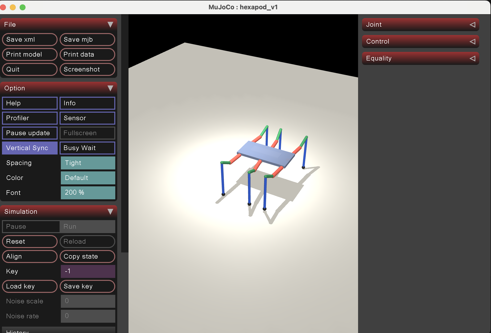
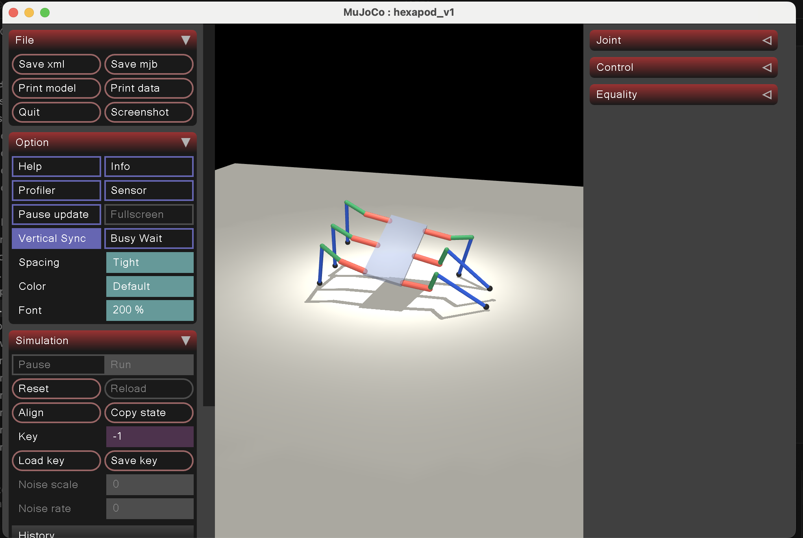

Performance Snapshot
Important: This is the formal results page. It distinguishes simulation evidence, bench-test evidence, and full-system hardware verification. As of April 27, 2026, all six legs can move under IK control, but stable directional locomotion is still pending.
Verification Matrix
| Requirement / Test | Target | Current Evidence | Status |
|---|---|---|---|
| Single-leg inverse kinematics | Compute stable 3-DOF joint targets for a commanded step trajectory | Interactive single-leg demo and hardware-ready PWM mapping implemented | Complete |
| Six-leg coordinated gait generation | Tripod gait with alternating support groups | MuJoCo simulation shows alternating tripod phases and stable standing keyframe | Complete |
| Six-leg powered IK actuation | Move all six legs from software-generated joint targets | Integrated robot demo shows all legs powered and responding to the IK-engine command path | Complete |
| Controller-to-servo command path | Drive physical motion from Xbox controller input through Pi-side IK/gait processing to ESP32 servo output | Xbox controller commands are handled by the Raspberry Pi, converted into servo-angle commands, and sent to the ESP32; runtime, calibration, and dance pages are hosted on the robot dashboard | Complete |
| Onboard vision | Detect calibration targets in real time on the Pi | OpenCV AprilTag pipeline running on Raspberry Pi 5 at roughly 20–25 fps | Complete |
| Forward / backward walking on full robot | Repeatable physical walking demonstration | Not yet demonstrated; legs move but the body does not translate reliably | Pending |
| Turn in place on full robot | Physical turning demo | Possible in limited tests, but not yet verified as a repeatable capability | In Progress |
| Payload support | 170 lb rider / payload target | Human seated demo clip captured; dynamic walking under rider load is not verified | In Progress |
| Ride height | 2–3 ft above ground | Final assembly not yet measured | Pending |
| Battery endurance | ≥ 30 minutes continuous operation | Endurance test not yet run on the integrated system | Pending |
| Safety interlock behavior | Detect unsafe state and stop motion | Safety architecture defined; integrated full-system shutdown validation still pending | In Progress |
Current Evidence
Simulation Stability
MuJoCo provides the strongest evidence for six-leg gait behavior so far. The full robot can be initialized into a standing pose and stepped through alternating tripod phases with contact and gravity modeled.

Bench Hardware Actuation
The strongest current hardware validation is the integrated six-leg power-on demo. Earlier single-leg bench tests proved the command path; the current robot now moves all six legs but still needs gait and contact tuning before it can walk reliably.

Camera Throughput
The AprilTag detector is already operating at a practical rate on the Pi 5, which gives the team a solid base for pose estimation and calibration experiments.

Geometry Consistency
The same leg dimensions and mounting assumptions are now shared across CAD, IK, and MuJoCo. This reduces the risk of testing against mismatched geometry.

Check 3 Demo Evidence
Six-Leg Powered Motion
This demo shows the integrated robot with all six legs powered and moving from the current IK/control stack. The robot is not yet able to translate forward or backward reliably.
Human Seated Test
This demo records the robot under a seated human load. It supports payload integration evidence, but it is not a completed walking performance test.
Open Performance Work
Six-Leg Walking Demo
Translate the working gait stack from simulation and single-leg tests onto the integrated chassis.
Load & Height Measurement
Measure real ride height and perform static / dynamic payload checks on the final frame.
Power-Endurance Testing
Run timed trials once the final battery and wiring architecture are stable.
Safety Regression Checks
Verify emergency-stop behavior and safe command shutdown on the complete robot, not just in subsystem isolation.